2023年北京中考数学 第26题 解析
26. 在平面直角坐标系
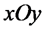
中，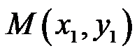
，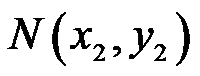
是抛物线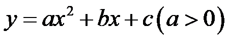
上任意两点，设抛物线的对称轴为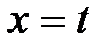
．（1）若对于
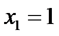
，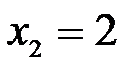
有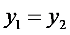
，求的值；（2）若对于
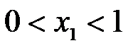
，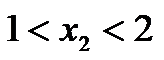
，都有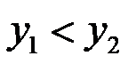
，求的取值范围．【答案】（1）
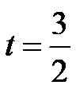
（2）
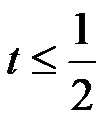
【解析】
【分析】（1）根据二次函数的性质求得对称轴即可求解；
（2）根据题意可得
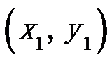
离对称轴更近，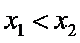
，则与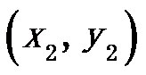
的中点在对称轴的右侧，根据对称性求得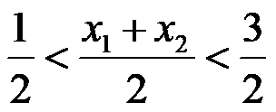
，进而根据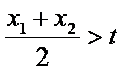
，即可求解．【小问1详解】
解：∵对于，有，
∴抛物线的对称轴为直线
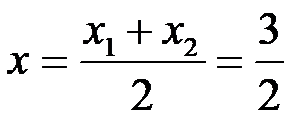
，∵抛物线的对称轴为．
∴；
【小问2详解】
解：∵当，，
∴，，
∵，
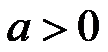
，∴离对称轴更近，，则与的中点在对称轴的右侧，
∴，
即．
【点睛】本题考查了二次函数的性质，熟练掌握二次函数的对称性是解题的关键．